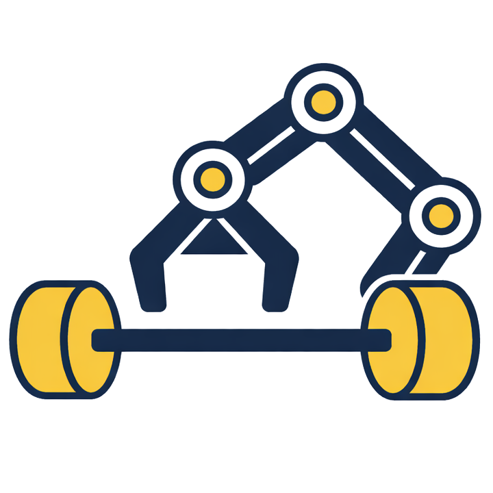
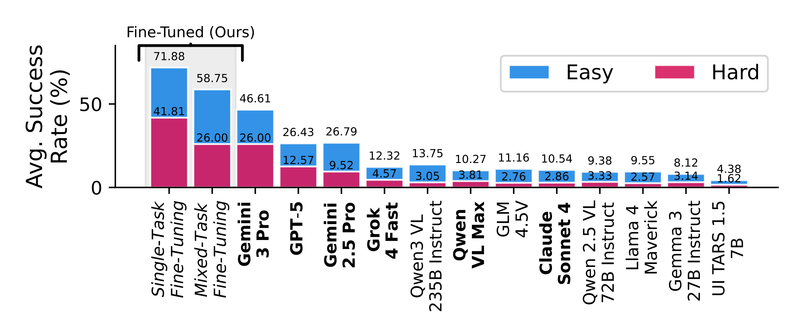
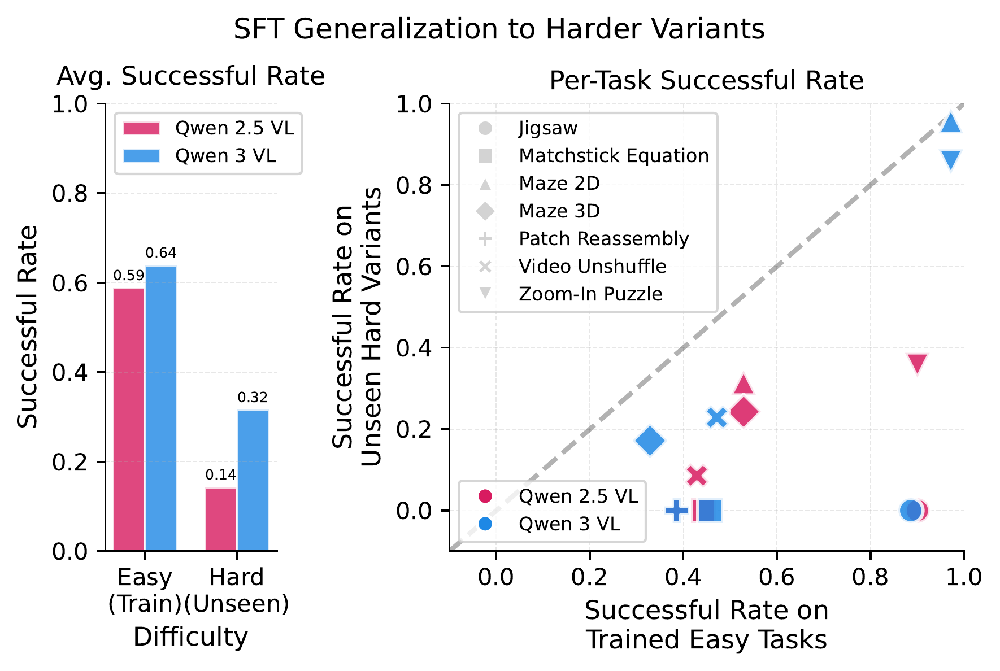
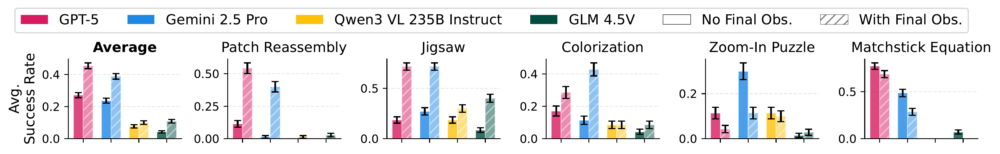
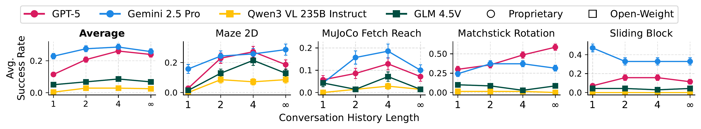
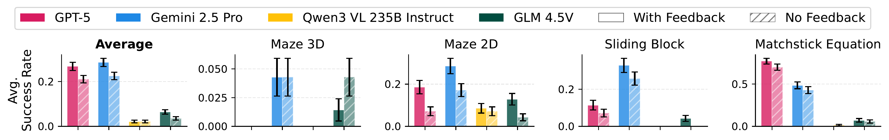
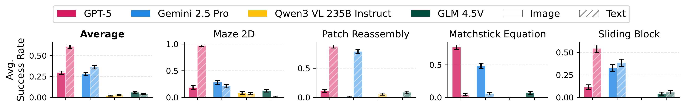

VisGym
Diverse, Customizable, Scalable Environments for Multimodal Agents


Abstract
Modern Vision–Language Models (VLMs) remain poorly characterized in multi-step visual interactions, particularly in how they integrate perception, memory, and action over long horizons.
We introduce VisGym, a gymnasium of 17 environments for evaluating and training VLMs. The suite spans symbolic puzzles, real-image understanding, navigation, and manipulation, and provides flexible controls over difficulty, input representation, planning horizon, and feedback. We also provide multi-step solvers that generate structured demonstrations, enabling supervised finetuning.
Our evaluations show that all frontier models struggle in interactive settings, achieving low success rates in both the easy (46.6%) and hard (26.0%) configurations. Our experiments reveal notable limitations: models struggle to effectively leverage long context, performing worse with an unbounded history than with truncated windows. Furthermore, we find that several text-based symbolic tasks become substantially harder once rendered visually.
However, explicit goal observations, textual feedback, and exploratory demonstrations in partially observable or unknown-dynamics settings for supervised finetuning yield consistent gains, highlighting concrete failure modes and pathways for improving multi-step visual decision-making.
Frontier VLMs Fail on VisGym
Even the best-performing frontier model, GPT-5, achieves only 26.43% on VisGym (Easy) and 12.57% on VisGym (Hard), indicating that VisGym poses a significant challenge for existing models.

Control Study
Teaching Agents to Explore Before Exploitation
Some trajectories are far more informative than others—especially those that reveal hidden state or disambiguate perception. We test whether inducing such information-revealing behaviors during supervised finetuning improves VLM decision-making.
Across tasks with unknown dynamics and partial observability, structured demonstrations that explicitly probe action–perception correspondence consistently outperform solve-only trajectories, improving both success and final accuracy.
Further finetuning on longer but unstructured demonstrations degrades performance, confirming that gains come from the informative structure of demonstrations—not their length or quantity.
Matchstick Rotation (Unknown Dynamics)
| Comparison Dimension | Baseline Demonstrations (Stochastic) | Information-Revealing (Structured) |
|---|---|---|
| Strategy | Three stochastic moves toward the target | Two unit-scale steps to probe action–perception correspondence |
| Success Rate | 32.9% | 70.0% (≈2.1×) |
Mental Rotation 3D (Partial Observability)
| Comparison Dimension | Baseline Demonstrations (Solve-Only) | Information-Revealing (Explore-Then-Solve) |
|---|---|---|
| Strategy | Directly attempt to solve the task | Explicit exploratory actions to reveal hidden state |
| State Coverage | Partial, implicit | Explicitly disambiguates latent variables |
| Success Rate | 28.6% | 62.4% (≈2.2×) |
Supervised finetuning is most effective when demonstrations teach agents how to reveal state, not just what action to take.

Better Eyes Or Better Brain
We decoupled the architecture to ask a simple question: does performance come from better eyes (the vision encoder) or a better brain (the LLM)?
Our analysis shows that, for most interactive tasks, temporal reasoning is the dominant factor.
While visual perception is necessary, the ability to integrate history and plan over time is what truly differentiates model performance.

Stronger Base Model Generalizes Better
Supervised finetuning is known to generalize poorly to task variants. We revisit this question for modern VLMs by finetuning Qwen2.5-VL-7B and Qwen3-VL-8B on the same training data and optimization setup, then evaluating on harder task variants.
While both models perform similarly on the easy variants seen during training, Qwen3-VL generalizes substantially better to harder settings, nearly doubling the success rate on average. This shows that newer VLMs expand the generalization limits of supervised finetuning in multi-step visual decision-making.
Diagnosing Frontier Models with VisGym
Providing Final Goal at Beginning
Providing the final solution image upfront reframes these tasks from reasoning about goals to aligning observations with a known target, shifting difficulty toward visual perception and tool execution.
We evaluate this effect on five tasks—Patch Reassembly, Jigsaw, Colorization, Zoom-In Puzzle, and Matchstick Equation—where constructing the goal state is non-trivial. We augment instructions with the ground-truth final observation ogt.
Across tasks, performance improves substantially, indicating that imagining or constructing the target state is a key bottleneck. However, accuracy remains far from perfect, revealing additional limitations beyond reasoning—most notably fine-grained visual perception and action execution.
Unexpectedly, GPT-5 and Gemini 2.5 Pro underperform on Zoom-In Puzzle and Matchstick Equation when the goal image is provided, often terminating early despite visible mismatches. Follow-up tests attribute this failure to visual misjudgment rather than reasoning errors: when asked whether initial and goal images were identical, Gemini 2.5 Pro produced false positives 80% and 57% of the time on these tasks, compared to 18%, 2%, and 0% on Colorization, Jigsaw, and Patch Reassembly.
These results show that perception errors can negate—or even reverse—the expected benefits of explicit goal supervision.

Effect of providing the final goal observation. No Final Obs. and With Final Obs. indicate whether the goal image is available at episode start (mean ± s.e.).
Turns to Keep in Conversation History
While longer interaction histories provide useful environmental signals, they also introduce redundant and stale information that can hurt performance.
Across Maze2D, Sliding Block, MuJoCo Fetch Reach, and Matchstick Rotation, models perform best with a limited recent history, but degrade when given the full unbounded context.
This shows that visual context helps multi-step decision-making only up to a point. Importantly, the effect is task- and model-dependent, including cases of reverse scaling where longer history consistently reduces performance.

Effect of truncating conversational context. Settings 1, 2, 4, and ∞ retain increasing amounts of recent history, from the current turn only to the full history (mean ± s.e.).
Removal of Text-based Feedback
Humans can infer action consequences directly from visual changes, but current VLMs cannot reliably do so.
Across four tasks—Maze 3D, Maze 2D, Sliding Block, and Matchstick Equation—removing textual feedback and relying only on visual state transitions leads to consistent performance drops.
This shows that VLMs struggle to judge action validity from visual changes alone and depend heavily on text-based feedback during visually interactive decision-making.

Effect of text-based feedback. Results with and without environment feedback (mean ± s.e.).
Representing Observation in Text
We compare visual and ASCII-only versions of four symbolic tasks. Removing visual encoding significantly improves GPT-5's performance—often by 3–4×—indicating that its primary limitation lies in visual grounding rather than long-horizon reasoning.
Gemini 2.5 Pro shows mixed effects across tasks, suggesting limitations in both perception and planning. Open-weight models perform poorly in both settings, indicating broader weaknesses in long-horizon decision-making.
Notably, Matchstick Equation reverses this trend: all models perform better with visual input than with ASCII, likely due to distorted ASCII glyphs that hinder model understanding.


Effect of ASCII visualization. Image and Text denote visual and ASCII observation modalities (mean ± s.e.).
Qualitative Failure Modes (How They Fail)

The "Infinite Looper"
Models often get stuck in a repetitive cycle, acting like a broken record. In this StringSight task, the model repeatedly issues the same swap command between the same two pieces without making any progress towards solving the puzzle, as evidenced by identical actions over multiple consecutive steps.
"Why do models fail with long context? They get stuck in Action Loops, repeating the same mistake despite new observations."

The "Rage Quitter"
Perception errors lead to false confidence. The model revisits previously blocked directions and fails to remember which moves have already been proven impossible, leading to repeated failed actions instead of seeking new routes.
"Models often hallucinate that a task is unsolvable and trigger Early Termination."

The "Stubborn Explorer"
Without explicit state tracking, models act like they have amnesia. The model frequently misjudges the effect of its rotations, such as applying large yaw or roll corrections that result in the object being further from the target, indicating it is not fully utilizing the visual feedback.
"Without explicit state tracking, models suffer from State Mismanagement, ignoring critical environmental feedback."

"Optimistic Rotator"
After a long sequence of failed moves, the model explicitly gives up and submits the equation as final, stating 'I give up.' The model misinterprets the visual feedback and repeatedly makes incorrect moves, eventually giving up despite the task being solvable.
"Confirming that Visual Perception remains a distinct bottleneck from reasoning."
BibTeX
@article{wang2026visgym,
title = {VisGym: Diverse, Customizable, Scalable Environments for Multimodal Agents},
author = {Wang, Zirui and Zhang, Junyi and Ge, Jiaxin and Lian, Long and Fu, Letian and Dunlap, Lisa and Goldberg, Ken and Wang, Xudong and Stoica, Ion and Chan, David M. and Min, Sewon and Gonzalez, Joseph E.},
journal = {arXiv preprint arXiv:2601.16973},
year = {2026},
url = {https://arxiv.org/abs/2601.16973}
}